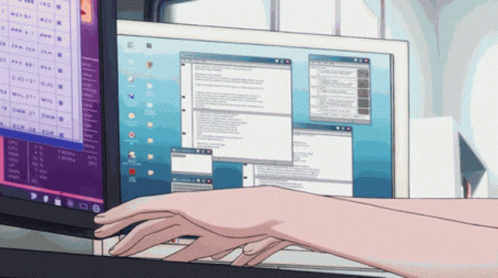
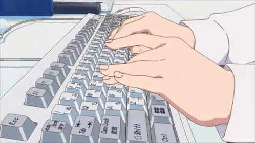

My Favorite Typing Websites
typingclub.comif you have never typed properly or want to learn from scratch this site has great tutorials and exercises.
this one is a great practice site that learns from you and makes excercises to help improve your weaknesses
monkeytype.comis an awesome practice website with great options and data on your typing progress, they also have a community on discord if you want to chat about typing related things or compare your progress with others.
play.typeracer.comlets you challenge your friends or race random people online, it has a cool graphic with little cars. its also a great real world test since all of its text comes from quotes, songs, books, movies and more.
typings.ggIs a minimalist alternative to monkeytype. It uses the same wordlists but has no account features or stats. I love to use it to warm up before doing a few rounds on monkeytype (This way my stats don't tank if I haven't practiced in a while.)
Reasons I Love Typing!
Reason 1: you can get into "the flow" without the mental effort.
Reason 2: it's a great way to take a break from something while still developing a useful skill.

Reason 3: it becomes like a game.
Reason 4: it looks really cool when you can type fast and without looking.

Reason 5: *clicky* *clicky*

Reason 6: you'll save time in the long run.

this was pretty much just an excuse to use all the typing gifs i found. thanks for reading :)